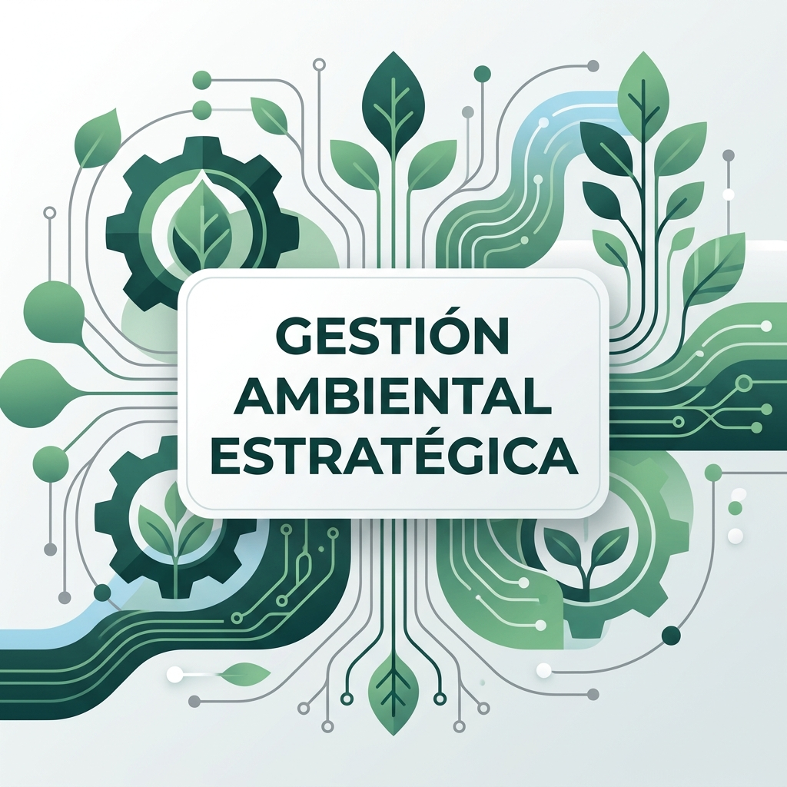

QO-AMBIENTAL
S.A.S ZOMAC
Conectamos lo técnico, lo jurídico y lo empresarial para asegurar la viabilidad de sus activos.
Quiénes Somos
En Qo-Ambiental acompañamos a organizaciones en la gestión estratégica de sus desafíos ambientales, integrando cumplimiento normativo, sostenibilidad y desarrollo de negocio.
Nuestro enfoque va más allá de la consultoría tradicional: estructuramos soluciones que permiten a las organizaciones tomar decisiones informadas, gestionar riesgos y capitalizar oportunidades en un entorno regulatorio y climático cada vez más exigente.
Actuamos como un aliado estratégico que conecta lo técnico, lo jurídico, lo territorial y lo empresarial.

Propuesta de Valor
- Cumplimiento normativo
- Gestión de riesgos
- Sostenibilidad corporativa (ESG)
- Desarrollo de nuevas oportunidades de negocio
- Inteligencia territorial para la toma de decisiones
Enfoque Estratégico
Gestión de cumplimiento con visión estratégica.
Integración de sostenibilidad en el negocio.
Desarrollo de nuevas oportunidades.
Uso de información y tecnología para la toma de decisiones.
🌍 COBERTURA GLOBAL
COLOMBIA | PROYECCIÓN LATAM (PERÚ — ARGENTINA)
Líneas de Servicio
1. Sostenibilidad y ESG
- Estrategias de sostenibilidad
- Diagnóstico de madurez ESG
- Reporte Supersociedades (Informe 08)
- Informes GRI, SASB, TCFD, ISSB S1/S2
- Huella de carbono y hoja de ruta net zero
- Análisis de doble materialidad
- Gestión de riesgos climáticos (TCFD)
2. Gestión Ambiental Estratégica
- Licenciamiento ambiental
- EIA, PMA, DAA
- Cumplimiento normativo integral
- Auditorías ambientales
- Debida diligencia ambiental (M&A)
3. Riesgo y Defensa Ambiental
- Procesos sancionatorios
- Estrategias preventivas y correctivas
- Gestión de riesgos regulatorios
- Debida diligencia y DDHH
4. Desarrollo de Negocios Sostenibles
- Mercados de carbono
- Economía circular
- Sostenibilidad en cadena de valor
- Estructuración de proyectos
5. Transición Energética y Proyectos
- Gestión ambiental de proyectos energéticos
- Permisos y viabilidad territorial
- Evaluación de impacto — renovables
- Hidrógeno verde: estructuración ambiental
6. Inteligencia Territorial y Analítica GIS
- Viabilidad espacial de proyectos
- Restricciones ambientales y sociales
- Modelación de escenarios territoriales
- Dashboards geográficos de decisión
- Monitoreo y seguimiento territorial
7. Formación y Cultura Sostenible
- Capacitación ESG para equipos
- Cultura organizacional sostenible
- Comunicación anti-greenwashing
- Programas de sensibilización
8. Monitoreo y Gestión Operativa
- Monitoreo de agua, aire, suelo y ruido
- Seguimiento a obligaciones ambientales
- Programas de compensación e inversión (1%)
- Indicadores y KPIs de gestión
Nuestra Huella

Despliegue de proyectos FNCER a gran escala.

PMA y auditoría técnica de infraestructura.

Consultoría institucional en viabilidad territorial.
Inteligencia GIS y licenciamiento táctico.